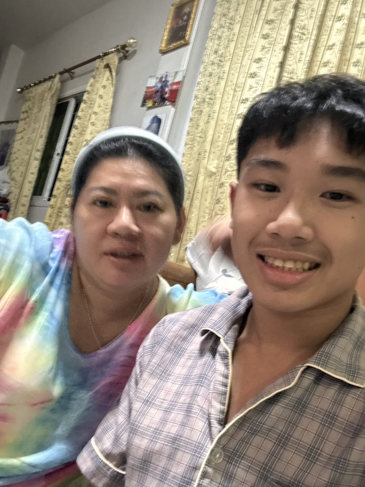

วันพ่อเเห่งชาติ 💛💛
สิ่งที่อยากบอกเเเม่
Thank for everything my dad
บทกลอนให้เเม่
โอ้ละเห่-ฟูมฟัก... ด้วยรักเจ้า เมื่อยามเยาว์แม่ถนอมกล่อมจอมขวัญเอื้ออาทร-ร้อนร้าย แม่คลายพลัน ภัยกางกั้นแม่กล้าฟันฝ่าไป
หวังเพียงแค่ "คนดี" ที่แม่รัก จะมีหลักอนาคตที่สดใส
ยอมลำบากยากเย็นทุกข์เข็ญใจ ด้วยสายใยรักแน่น ไม่แคลนคลอน